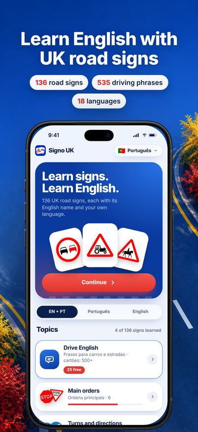
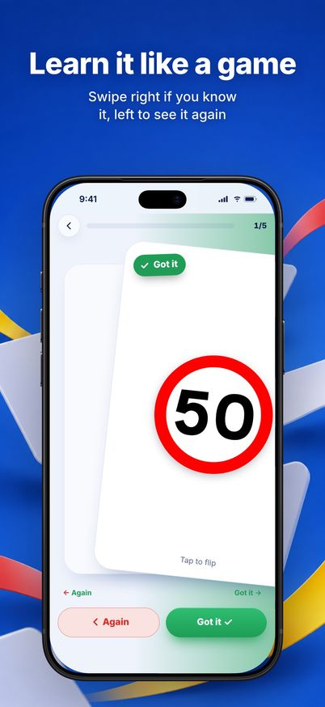
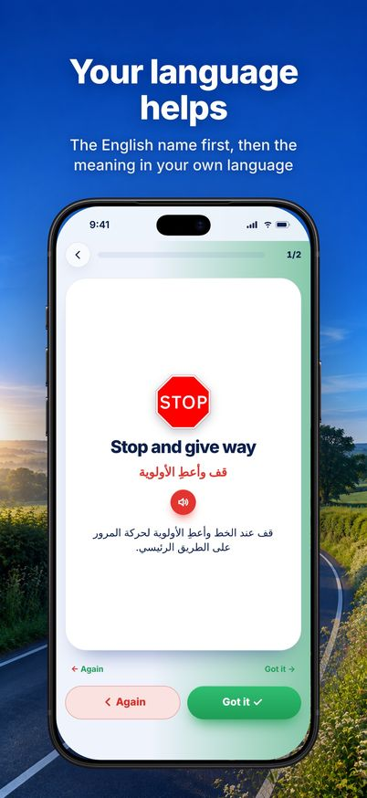
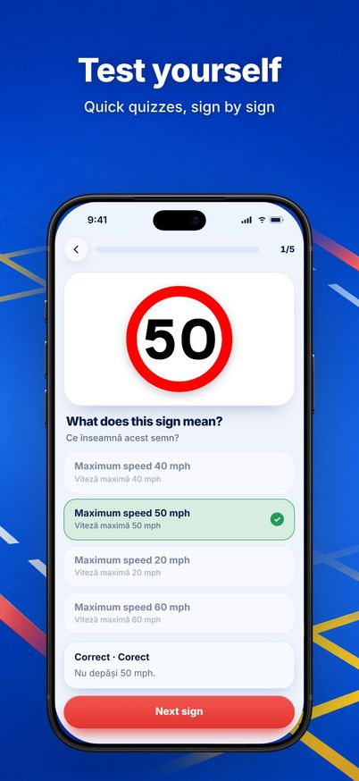
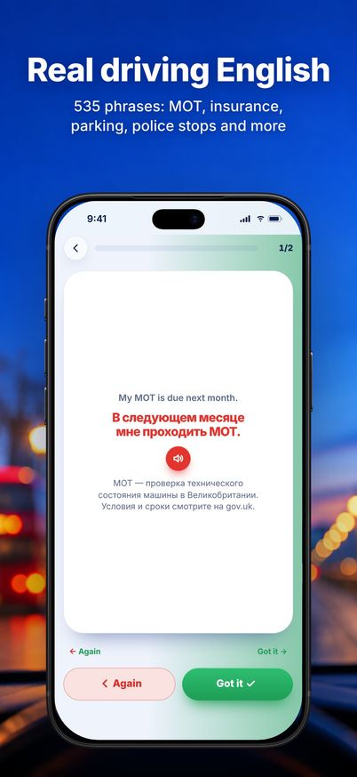
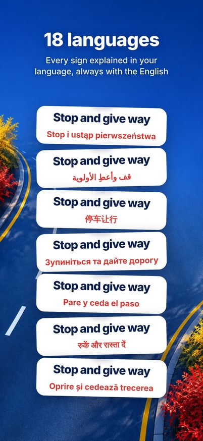
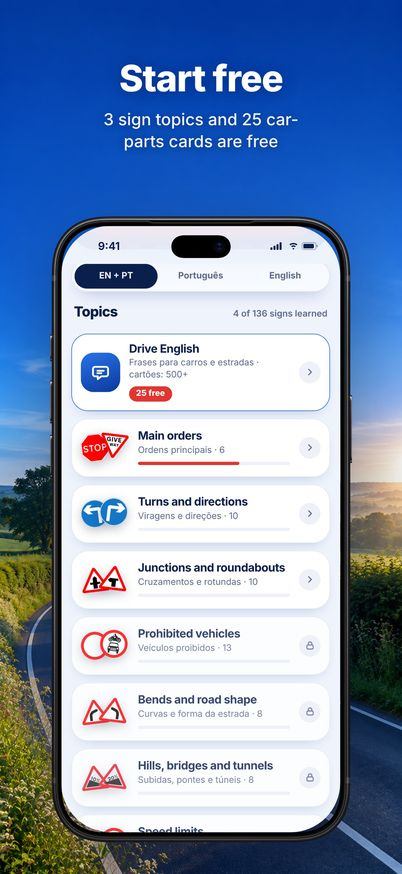
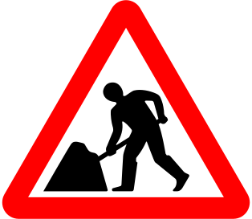

Didžiosios Britanijos kelio ženklai lietuviškai
Ką reiškia kiekvienas ženklas ir kaip jis vadinamas angliškai. Signo yra iPhone programėlė: 136 ženklai ir 535 frazės vairavimui Didžiojoje Britanijoje, paaiškinti lietuviškai.
Atsisiųsti iš App StoreNemokamai: 3 ženklų temos ir 25 žodžiai apie automobilio dalis. Signo Pro atrakina viską.


Mokykitės kaip žaisdami
Žinote ženklą — braukite į dešinę, ne — į kairę, ir jis sugrįš. Angliškas pavadinimas skamba britišku balsu, po pamokos — trumpas testas.







Dažni ženklai ir jų reikšmė
Paspauskite ženklą, kad pamatytumėte paaiškinimą.
- Sustoti ir duoti keliąStop and give way
 Duoti kelią pagrindiniu keliu važiuojančioms transporto priemonėmsGive way to traffic on major road
Duoti kelią pagrindiniu keliu važiuojančioms transporto priemonėmsGive way to traffic on major road Transporto priemonių įvažiavimas draudžiamasNo entry for vehicular traffic
Transporto priemonių įvažiavimas draudžiamasNo entry for vehicular traffic Galioja nacionalinis greičio apribojimasNational speed limit applies
Galioja nacionalinis greičio apribojimasNational speed limit applies- Didžiausias greitis 30 mphMaximum speed 30 mph
 Didžiausias greitis 20 mphMaximum speed 20 mph
Didžiausias greitis 20 mphMaximum speed 20 mph Didžiausias greitis 40 mphMaximum speed 40 mph
Didžiausias greitis 40 mphMaximum speed 40 mph Didžiausias greitis 50 mphMaximum speed 50 mph
Didžiausias greitis 50 mphMaximum speed 50 mph Didžiausias greitis 60 mphMaximum speed 60 mph
Didžiausias greitis 60 mphMaximum speed 60 mph Įvažiavimas į 20 mph zonąEntry to 20 mph zone
Įvažiavimas į 20 mph zonąEntry to 20 mph zone Lenkti draudžiamaNo overtaking
Lenkti draudžiamaNo overtaking Sukti į dešinę draudžiamaNo right turn
Sukti į dešinę draudžiamaNo right turn Sukti į kairę draudžiamaNo left turn
Sukti į kairę draudžiamaNo left turn Apsisukti draudžiamaNo U-turns
Apsisukti draudžiamaNo U-turns Laikytis kairėsKeep left
Laikytis kairėsKeep left Mažoji žiedinė sankryžaMini-roundabout
Mažoji žiedinė sankryžaMini-roundabout- Priekyje žiedinė sankryžaRoundabout ahead
 Visų transporto priemonių eismas draudžiamasAll vehicles prohibited
Visų transporto priemonių eismas draudžiamasAll vehicles prohibited Motorinių transporto priemonių eismas draudžiamasNo motor vehicles
Motorinių transporto priemonių eismas draudžiamasNo motor vehicles Sustoti pagrindinėje važiuojamojoje dalyje draudžiamaNo stopping on main carriageway
Sustoti pagrindinėje važiuojamojoje dalyje draudžiamaNo stopping on main carriageway Kelias tik autobusams, dviračiams ir taksiRoute for use by buses, pedal cycles and taxis only
Kelias tik autobusams, dviračiams ir taksiRoute for use by buses, pedal cycles and taxis only Įvažiavimas į kontroliuojamo stovėjimo zonąEntrance to controlled parking zone
Įvažiavimas į kontroliuojamo stovėjimo zonąEntrance to controlled parking zone Tik leidimų turėtojamsPermit holders only
Tik leidimų turėtojamsPermit holders only Tik neįgaliųjų kortelių turėtojamsDisabled badge holders only
Tik neįgaliųjų kortelių turėtojamsDisabled badge holders only Stovėjimo vietaParking place
Stovėjimo vietaParking place Greičio matavimo kamerosSpeed cameras
Greičio matavimo kamerosSpeed cameras Sustoti – policijaStop - Police
Sustoti – policijaStop - Police Vieta, nuo kurios pradeda galioti automagistralės taisyklėsPoint at which motorway regulations start to apply
Vieta, nuo kurios pradeda galioti automagistralės taisyklėsPoint at which motorway regulations start to apply Priekyje šviesoforaiTraffic signals ahead
Priekyje šviesoforaiTraffic signals ahead Pėsčiųjų perėja „zebras“Zebra crossing
Pėsčiųjų perėja „zebras“Zebra crossing Priekyje į mokyklą ar žaidimų aikštelę einantys arba iš jų grįžtantys vaikaiChildren going to or from school or playground ahead
Priekyje į mokyklą ar žaidimų aikštelę einantys arba iš jų grįžtantys vaikaiChildren going to or from school or playground ahead
Kelio darbaiRoad works Slidus keliasSlippery road
Slidus keliasSlippery road Priekyje geležinkelio pervaža su vartais arba užtvaruLevel crossing with gate or barrier ahead
Priekyje geležinkelio pervaža su vartais arba užtvaruLevel crossing with gate or barrier ahead Priekyje geležinkelio pervaža be vartų arba užtvaroRailway level crossing without gate or barrier ahead
Priekyje geležinkelio pervaža be vartų arba užtvaroRailway level crossing without gate or barrier ahead Duoti pirmenybę iš priešingos krypties važiuojančioms transporto priemonėmsGive priority to vehicles from opposite direction
Duoti pirmenybę iš priešingos krypties važiuojančioms transporto priemonėmsGive priority to vehicles from opposite direction Pirmenybė prieš iš priešingos krypties važiuojančias transporto priemonesTraffic has priority over oncoming vehicles
Pirmenybė prieš iš priešingos krypties važiuojančias transporto priemonesTraffic has priority over oncoming vehicles Aukštesnių nei nurodyta transporto priemonių eismas draudžiamasNo vehicles over height shown
Aukštesnių nei nurodyta transporto priemonių eismas draudžiamasNo vehicles over height shown Priekyje T formos sankryžaT-junction ahead
Priekyje T formos sankryžaT-junction ahead Priekyje keturšalė sankryžaCrossroads ahead
Priekyje keturšalė sankryžaCrossroads ahead Vienos eismo juostos keliasSingle track road
Vienos eismo juostos keliasSingle track road Prasilenkimo vietaPassing place
Prasilenkimo vietaPassing place
Automobilio dalys angliškai
25 žodžiai iš nemokamo Drive English skyriaus. Paspauskite žodį, kad išgirstumėte.
Visi 136 ženklai yra programėlėje
Nemokamai: 3 ženklų temos ir 25 žodžiai apie automobilio dalis. Signo Pro atrakina viską.